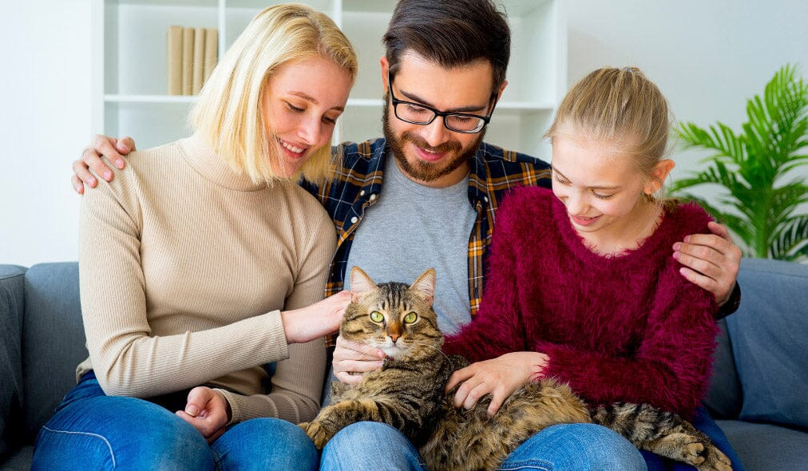
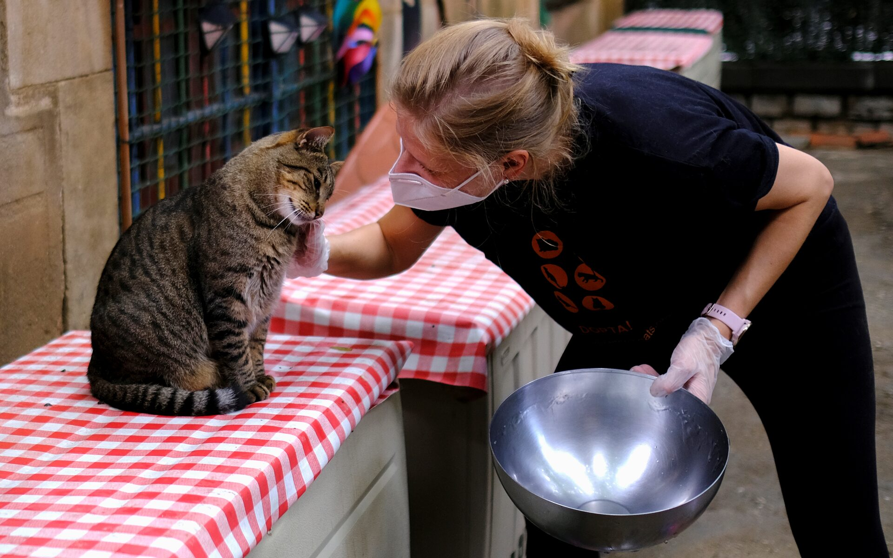

Feline Friends Adoption Services is dedicated to giving rescued cats a second chance at life. We are a passionate team of animal lovers who work to provide safe shelter, proper care, and endless love to cats in need. Every cat that comes to us has a story—some have been abandoned, others rescued from difficult conditions—but all of them deserve a future filled with comfort and care. We believe that adoption is more than just finding a pet; it’s about creating a lifelong bond. That’s why we take the time to understand each cat’s personality and match them with the right family. Our goal is to ensure every adoption leads to a happy home for both the cat and their new owner. Every life we save reminds us why compassion and care make all the difference.

A world where every cat has a loving home.
To rescue, care for, and connect cats with compassionate families.
Compassion, care, and commitment to every life.

At Feline Friends, we rescue, rehabilitate, and rehome cats of all ages. Each cat receives medical care, proper nutrition, and a safe, loving environment while they wait for their forever homes. We support adopters with guidance and resources to help every cat settle in smoothly. From playful kittens to calm seniors, we make sure each one is ready to be loved again and to bring joy to their new families. Every cat in our care is treated with patience, kindness, and respect, helping them regain trust and confidence. We believe that every adoption is a new beginning, filled with companionship, love, and lasting memories for both the cat and their human family.